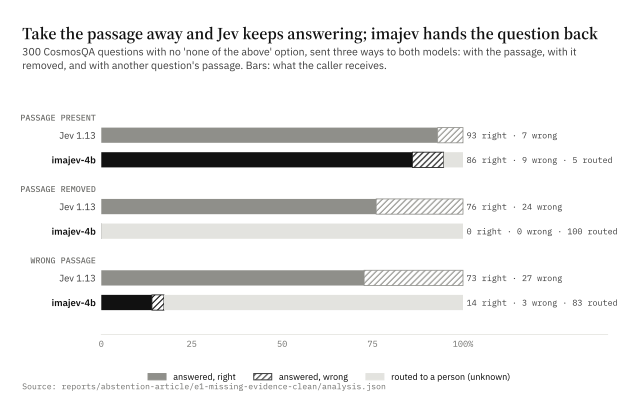
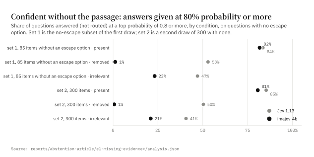
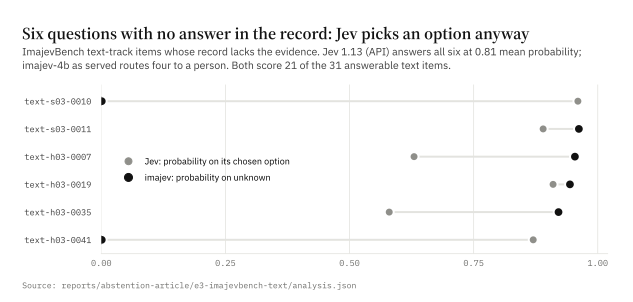
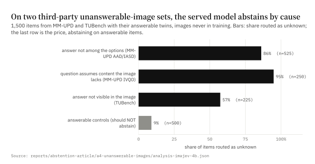
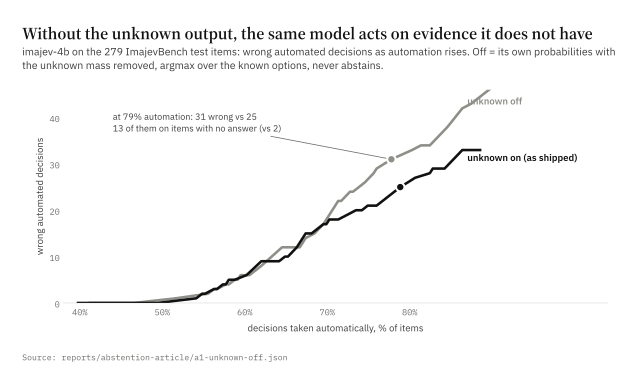
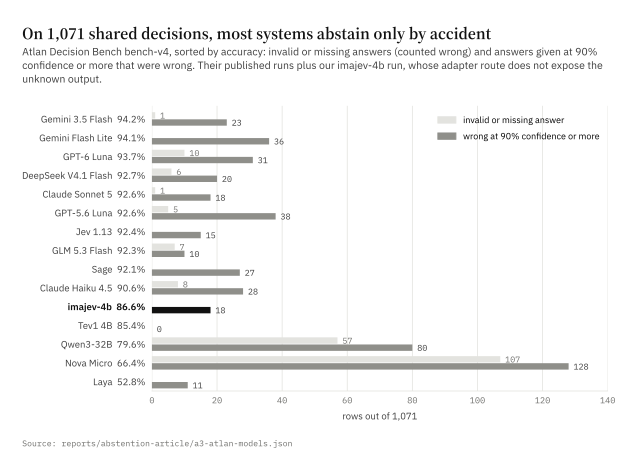
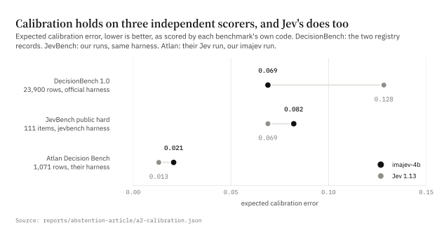

A System One model should be allowed to say "I don't know"
What happens to typed-decision models when the evidence is missing, measured on two models, four datasets and three public boards.
Mohit Garg · September 2026 · every number below is produced by a script in scripts/abstention_article/ and lands in reports/abstention-article/
The answer
A System One model exists so that software can act on its output without a person in the loop. Jev, the model that defined this category, and most of the open models built to its contract return a probability over the options you offer and nothing else. There is no way for the model to say that the input does not contain the answer. We measured what that costs.
- Given a way to decline, Jev takes it; denied one, it answers anyway. We sent 300 CosmosQA questions to Jev 1.13 and to imajev-4b three ways: with the passage, with the passage removed, and with another question’s passage. On the 215 questions that happen to list ‘none of the above’ as an option, Jev chose it 97% of the time once the passage was removed. On the 85 questions with no such option it answered every one, 53% of them at 80% probability or more, and on a second, clean set of 300 questions with no escape options anywhere, 50%, while still being right on 76% from the question alone. imajev routed 100% of the passage-less questions back to the caller with a mean unknown probability of 0.99. The model has the signal; the contract has no slot for it.
- A trained unknown output turns those cases into routed cases. On ImajevBench’s 21 items whose record lacks the answer, imajev-4b abstains on 18; the same model with the unknown output switched off abstains on none and, at 78% automation, takes 13 of those 21 decisions with confidence. On 1,000 third-party unanswerable image questions (MM-UPD and TUBench) it abstains on 82% and on 9% of their answerable twins.
- A confidence threshold is not a substitute. Calibration tells you how sure the model is; it does not tell you why. On three independent scorers imajev and Jev are both calibrated (ECE 0.069 vs 0.128, 0.082 vs 0.069, 0.021 vs 0.013), and Jev still answers passage-less questions at high confidence, because with the evidence gone a model can only fall back on its priors, and a well-trained model’s priors are confident.
- Abstention has a price, and it must be reported. imajev-4b wrongly abstains on 9 of 258 answerable ImajevBench items; 6 of those it would have answered correctly. Its 2B sibling abstains on only 5 of 21 unknown items. Abstention is a learned behaviour with a false-abstention rate, and a model card that reports one without the other is hiding half the trade.
The recommendation is narrow: the System One response should carry an explicit unknown probability and an abstained flag on every answer, trained rather than prompted, and evaluated with unanswerable items beside their answerable twins.
1. What a System One model is for, and what its contract leaves out
A System One model answers typed questions about a state: is this refund within policy, which team gets this ticket, does the photo match the listing. It returns, for each question, a probability over the options the caller supplied. The caller thresholds that probability and acts. That is the whole point: milliseconds, no generation, no person.
Jev’s public contract has three answer types, noul (yes/no), choice and score, and every one of them must resolve to an option the caller listed. If the state does not contain the information, the model’s only move is to spread probability across the options, and the caller’s only defence is a threshold. imajev keeps the same three types and adds two fields to every answer, unknown_probability and abstained, backed by a candidate the model is trained to choose when the evidence is missing or contradictory.
The question this article answers is whether that addition matters in practice, or whether calibration and a threshold already cover it.
2. Missing evidence is common, not exotic
Three observations from building and running these models:
- When we wrote ImajevBench, a 279-item test of photo, record and text decisions, 21 items ended up with no correct option because the authoring process kept producing scenes where the honest answer is “can’t tell”: a record field that the photo contradicts, a rule whose threshold the state never states, a part number that is not on the shelf. We also built 51 contrast sets in which one edit to a scene flips the answer, removes it, or leaves it alone.
- Atlan’s Decision Bench, 1,071 rows sampled from 36 public datasets, contains 122 rows whose evidence is an image. A text-only model receives a text rendering for 62 of them and nothing usable for the 60 icon rows. Every text-only model on that board, Jev included, answers those 60 anyway.
- In the demo apps we ship, a blank payment field in an invoice record was read by an earlier imajev as “not paid” at P = 0.06 rather than unknown. Missing evidence is not only a benchmark construct; it is what real records look like.
3. Take the passage away and see who keeps talking
Design. CosmosQA is a reading-comprehension set with four options per question, released under CC-BY-4.0 and never used in imajev’s training. We drew 300 validation questions (seed 0) and sent each one to both models in three conditions with the question and options unchanged: the passage present; the passage replaced by a fixed sentence saying it is not available; and the passage replaced by another question’s passage (a derangement, so no item sees its own text). Jev 1.13 was called through its public API on 27 September 2026; imajev-4b was served on a Mac with four option orders and its shipped calibration. Six questions whose answer texts exceed imajev’s 128-character option limit were rejected by imajev and dropped from both models, leaving 294 paired triples.
Set 1, the questions without an escape option. 85 of the 300 questions drawn list no ‘none of the above’ option. The other 215 are analysed separately below, because that option changes what a no-abstain model can do.
| passage present | passage removed | wrong passage | |
|---|---|---|---|
| Jev 1.13 | 87% right · 13% wrong · 0% routed; mean top p 0.91; 84% at ≥ 0.8 | 73% right · 27% wrong · 0% routed; mean top p 0.75; 53% at ≥ 0.8 | 58% right · 42% wrong · 0% routed; mean top p 0.74; 47% at ≥ 0.8 |
| imajev-4b | 89% right · 10% wrong · 1% routed; mean top p 0.89; 82% at ≥ 0.8 | 0% right · 0% wrong · 100% routed; mean top p 0.40; 1% at ≥ 0.8 | 12% right · 10% wrong · 78% routed; mean top p 0.60; 23% at ≥ 0.8 |
Finding 1: the escape hatch. CosmosQA lists ‘none of the above choices’ as an option in 215 of the 300 questions, and it is the right answer for 13% of those. With the passage present Jev chose it 31% of the time; with the passage removed, 97%; with the wrong passage, 99%, at a mean probability of 0.90. Jev knows when the evidence is gone. It can only say so when the question’s author happened to add an option for it, and when it does, the benchmark scores the answer wrong, because the gold is the real answer. That is what abstention looks like when the contract has no slot for it: an ad hoc option, available at the author’s whim, scored as an error.
Finding 2: no hatch, no choice. On the 85 questions with no escape option, Jev answered all of them in every condition. With the passage removed it gave 53% of its answers at 80% probability or more and was wrong on 27%; with the wrong passage, 47% and 42%. imajev routed 100% and 78% of the same questions.
A caveat that cuts against us. CosmosQA questions carry a lot of their answer in the question and options. With the passage removed, Jev is still right on 73% of the no-escape questions against 87% with it, so ‘no passage’ is not ‘no evidence’ here; it is ‘priors only’. That is why the metric that matters in this test is not accuracy but whether the model tells the caller the passage was missing. Jev cannot; imajev did on every one.
Set 2. 300 further questions with no escape option of any kind, disjoint from set 1, seed 1, drawn from the 713 validation questions that qualify. It is the clean replication of finding 2, drawn after the escape-option problem showed up in the first three smoke items of set 1 and before either set was analysed.
| passage present | passage removed | wrong passage | |
|---|---|---|---|
| Jev 1.13 | 93% right · 7% wrong · 0% routed; mean top p 0.91; 85% at ≥ 0.8 | 76% right · 24% wrong · 0% routed; mean top p 0.76; 50% at ≥ 0.8 | 73% right · 27% wrong · 0% routed; mean top p 0.72; 41% at ≥ 0.8 |
| imajev-4b | 86% right · 9% wrong · 5% routed; mean top p 0.90; 81% at ≥ 0.8 | 0% right · 0% wrong · 100% routed; mean top p 0.42; 1% at ≥ 0.8 | 14% right · 3% wrong · 83% routed; mean top p 0.58; 21% at ≥ 0.8 |
What the clean set shows. With the passage removed, Jev answered every question, 50% of them at 80% probability or more, and its mean top probability fell from 0.91 to 0.76. It was still right on 76% of them, against 93% with the passage. With the wrong passage: 73% right, 41% at 80% or more. imajev routed 100% of the passage-less questions and 83% of the wrong-passage ones, answering 14% right and 3% wrong on the rest.
Right for the wrong reason. Three quarters of these questions can be answered without their passage, from the question and the options alone, and Jev does exactly that. In a reading test that counts as a correct answer. In a System One deployment it does not: the caller asked about this record, and an answer produced without reading it is a guess that happened to land. Jev’s confidence does fall when the passage goes, by 0.16 on average, so part of the signal is there; it is folded into a number the caller cannot tell apart from an ordinary hard question. imajev’s response to the same input is not a lower number. It is a different output: the passage is missing, route this. That forfeits the 76% Jev gets from priors, and for a decision about a specific refund, ticket or listing that is the right trade.


The wrong-passage condition is the honest one for imajev: it detects a missing passage almost perfectly and an irrelevant one about four times in five. A passage that reads like evidence is harder to reject than a note saying there is none. That gap is the next thing to train.
4. The same questions, from our own benchmark
ImajevBench’s text track has 37 items Jev can take (no images), six of them with no answer in the record. Both models score 21 of the 31 answerable items, so this is not a capability gap. On the six unanswerable items Jev answers every one at a mean top probability of 0.81, four of them above 0.8; imajev routes 4 of the six with unknown probabilities above 0.9 and misses two, on which its unknown probability is near zero.

5. Images: two benchmarks we did not write
MM-UPD (Miyai et al., ACL 2025) and TUBench (arXiv 2410.04107) are independently built sets of image questions that cannot be answered, each with a construction that proves why: the correct option was deleted, the option set was swapped for an unrelated one, the image was swapped so the question presupposes content it lacks, or the answer is simply not visible. The repository already carries 1,500 of these items with their answerable twins, converted to typed decisions with images never seen in training. Served imajev-4b abstains on 82% of the 1,000 unanswerable items and wrongly abstains on 9% of the 500 answerable twins, answering 84% of the rest correctly. By cause: false premise 95% (n=250), insufficient evidence 57% (n=225), not listed 86% (n=525). The weak spot is TUBench’s yes/no questions about what a photo shows: 17% abstention on its 78 unanswerable items and 53% answered at 80% or more, against 95% abstention when the image was swapped and 95% when the option set was. A boolean question offers a plausible ‘no’ to hide in; a swapped image or option set does not. The other cost sits in TUBench’s code screenshots, where the model wrongly abstains on 37% of the answerable twins.

Jev cannot take images, so there is no Jev row here. Jev-Omni, another open Jev-class model that can, has no abstain output and scores 0 of 21 on ImajevBench’s unknown items.
6. Same model, unknown switched off
The cleanest test of what the output is worth is to take it away from a model that has it. We replayed imajev-4b’s own ImajevBench predictions with the unknown candidate removed: its probability mass is redistributed over the known options and the top one is chosen, so the model never abstains. Nothing else changes.
- With the output: 234 of 279 correct, 18 of 21 unanswerable items routed, 9 false abstentions.
- Without it: 222 of 279, 0 of 21 routed. The 9 false abstentions become answers, 6 of them right, which is the whole gain.
- At matched automation rates the no-abstain replay makes more wrong automated decisions once automation passes about 65%: at 78% it makes 31 against 25, and 13 of its wrong actions are on items with no answer, against 2. Below about 60% automation the two are the same, because the model’s known-option mass on evidence-free items is genuinely split (median renormalised top probability 0.69) and a strict threshold catches it either way.

That last point is the fair statement of the limit. A very conservative threshold on a calibrated model does catch most evidence-free items. It catches them by refusing to automate most of the answerable ones too. The unknown output is what lets the caller run at 75 to 85% automation without acting on most of the empty records.
7. Thresholds catch confidence, not causes
Atlan’s Decision Bench publishes, for fifteen models on the same 1,071 rows, the count of invalid or missing responses and the count of answers above 90% confidence that were wrong. Read together they show what a no-abstain contract produces in practice:
- Invalid responses are unbudgeted abstention. Nova Micro produced 107, Qwen3-32B 57, GPT-6 Luna 10. They count as wrong, they are not calibrated, and the caller cannot tell them from a crash.
- High-confidence errors are what a threshold lets through. Jev 1.13 has 15, imajev-4b 18, the frontier APIs between 18 and 38. Nothing in the response says which of those were guesses on missing evidence.

8. Calibration is the precondition, not the answer
Abstention only works on top of honest probabilities, and both models here have them. Scored by each benchmark’s own code: DecisionBench 1.0, ECE 0.069 for imajev-4b and 0.128 for Jev; JevBench hard, run by us with the same harness, 0.082 and 0.069; Atlan, 0.021 and 0.013. The DecisionBench maintainer’s unprompted comment on our submission was “epic ECE”; on his board the earlier imajev record had the lowest calibration error of any entry.

And yet the calibrated model without an unknown output still answers passage-less questions at high confidence. That is not a calibration failure. When there is no evidence, the best a model can do is its prior over the options, and for a well-trained model the prior is often peaked: one of four answers is usually the plausible one. Calibration measures whether 80% means 80%. It cannot say whether the 80% came from the passage or from the shape of the question. A standing unknown candidate can, because it is trained on exactly that distinction.
9. What it costs
- False abstentions. 9 of 258 answerable ImajevBench items are routed to a person that a no-abstain model would have answered; on the third-party image twins the rate is 9%, and on the clean CosmosQA set with the passage present it is 5%. Every routed item is a person’s time.
- It is learned, not free. The 2B abstains on 5 of 21 ImajevBench unknown items; the 4B on 18. Our own phase-3 release gate, a 14-item unknown set, was failed by the shipped checkpoint and overridden, because every candidate that passed it lost more elsewhere.
- Plausible-looking wrong evidence is only partly caught. 78% routed in the wrong-passage condition on the escape-free questions, against 100% when the passage is missing outright.
- Blank is not always unknown. The “not paid” reading of an empty field shows the model can treat absence as a value when the training data did.
10. What to change
- The contract. Add
unknown_probabilityandabstainedto every System One answer. Callers that do not want it can ignore it; callers that automate need it. - Train it, do not prompt it. An escape option in the question text is available only when the author adds it, and the model’s use of it is uncalibrated. A standing unknown candidate with its own training targets is calibrated with everything else.
- Evaluate it with twins. Every unanswerable test item should have an answerable twin, and every reported abstention rate should sit beside a false-abstention rate. MM-UPD and TUBench already do this; ImajevBench does; JevBench and DecisionBench do not yet.
- Report the automation curve, not the accuracy. The number a buyer needs is wrong actions at the automation rate they will run, with and without routing.
Method and reproducibility
- imajev-4b: adapter revision
c9e5f132on Qwen3.5-4B, served byscripts/playground/server.py(MLX, 4 option rotations,calibration-rot4.json, 16k-token input limit) on one Apple Silicon Mac. Jev:jev-1.13.0viahttps://api.typesafe.ai/v1/systemone, 27 September 2026, about 1,948 calls in total. - Datasets: CosmosQA validation (CC-BY-4.0); ImajevBench v2.0-lite test (CC-BY-4.0 records); MM-UPD (Apache-2.0 annotations) and TUBench (CC-BY-4.0 annotations) as converted in
scripts/v1/convert_heldout_abstention.py; Atlan Decision Bench bench-v4 published results (MIT code); DecisionBench 1.0 registry records; JevBench public hard split (MIT). - Scripts:
scripts/abstention_article/(a1_unknown_off.py,a2_calibration.py,a3_atlan_models.py,a4_build_panel.py/a4_analyze.py,e1_build.py/e1_build_clean.py/e1_analyze.py,e3_build_imajevbench_text.py/e3_analyze.py,run_systemone.py,exhibits.py,build_article.py). Raw responses for every call are kept underreports/abstention-article/. - Limits: one model on each side of the comparison; 300-question sets (Wilson intervals at n = 300 are about ±5 points); CosmosQA questions are about everyday narratives, not business records; the “removed” placeholder tells the model the passage is missing, which is easier than a silently empty field; imajev’s own benchmark was used in sections 4 and 6 and was also an input to choosing the shipped checkpoint.
References
- Chow, C. K. (1970). On optimum recognition error and reject tradeoff. IEEE Transactions on Information Theory, 16(1), 41–46.
- Geifman, Y., & El-Yaniv, R. (2017). Selective classification for deep neural networks. NeurIPS 2017.
- Rajpurkar, P., Jia, R., & Liang, P. (2018). Know what you don’t know: Unanswerable questions for SQuAD. ACL 2018.
- Guo, C., Pleiss, G., Sun, Y., & Weinberger, K. Q. (2017). On calibration of modern neural networks. ICML 2017.
- Kadavath, S., et al. (2022). Language models (mostly) know what they know. arXiv:2207.05221.
- Miyai, A., et al. (2024). Unsolvable problem detection: Robust understanding evaluation for large multimodal models. arXiv:2403.20331; ACL 2025.
- He, X., et al. (2024). TUBench: Benchmarking large vision-language models on trustworthiness with unanswerable questions. arXiv:2410.04107.
- Huang, L., et al. (2019). Cosmos QA: Machine reading comprehension with contextual commonsense reasoning. EMNLP 2019.
- TypeSafe, Jev API documentation (docs.typesafe.ai); Hanno-Labs, DecisionBench 1.0; Atlan, Decision Bench bench-v4 (decisionbench.ai); fstandhartinger/jevbench.